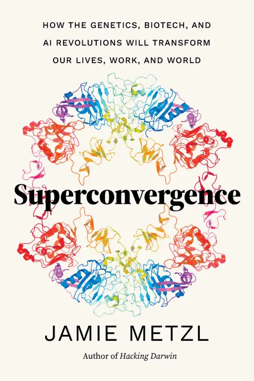

(Audio) Superconvergence, by Metzl
Monday December 30, 2024
Metzl rubs me the wrong way, a little bit, the way the heros of LinkedIn do. He's been bio-focused, and still is, but AI is hot so AI is in the book. He's not wrong, exactly, but it still feels attention-seeking. The book has very low information density, and then weirdly his main objective in the end is to get people excited about regulation.
Metzl advocates for the Ortega hypothesis, but mostly because it fits well with his story of exponential scientific progress: if we don't have to wait for geniuses, then progress can keep accelerating. Interesting take.
He talks a lot about god-like powers, and how we need to regulate them. He's at pains to say this shouldn't be a global body imposing rules, but that every country should do things in line with their own culture and values. Ignoring that requiring countries to regulate where they wouldn't on their own is already an imposition, this federated approach only works if we have fairly strong assumptions about every government's culture and values playing well with what we think is reasonable. But then he goes on to say that also there should be international coordination, seemingly with more teeth than the WHO and so on, so he is arguing for global control in the end as well.
Metzl also believes fairly strongly that COVID-19 was produced by humans. It makes sense to talk about this in the book because it adds weight to the discussion of risks, making it not just hypothetical. This kind of talk always makes me think of the assassination germ idea in The Three Body Problem. Scary stuff indeed.
